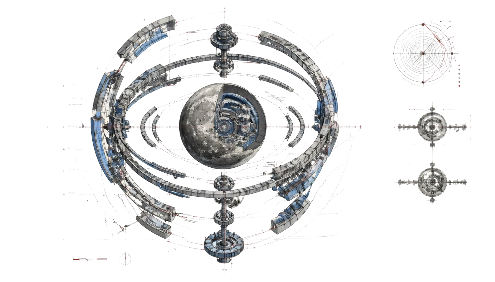
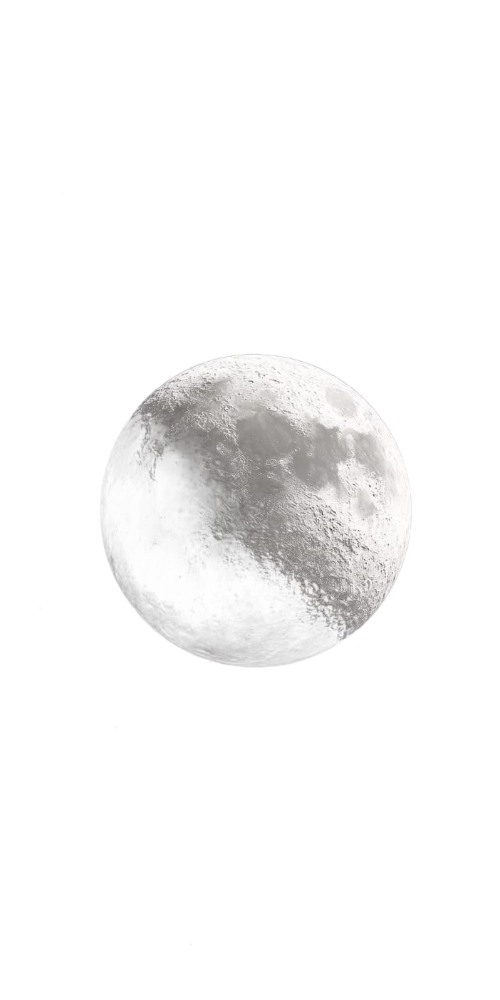
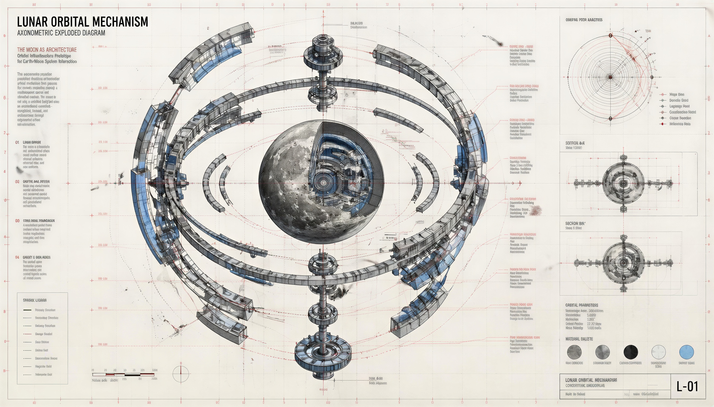

PROTOGONOS
--:--:--
L-01
PROTOGONOSORBITAL MECHANISMPLATE L-012026

++++
ORBITA I · R = 2.7·10⁶ m
SPIN 1/2 · TOROIDAL NODE
V → ∂(Tкань Бытия)/∂t
PROTOGONOS
ПЕРВОРОДНЫЙ ВИХРЬ · ТКАНЬ БЫТИЯ · ПРОТОКОЛ L-01
SCROLL
0ПУСТОТА · SINGULARITY RADIUS
1/2КВАНТ СПИНА · INERTIA OF VORTEX
720°ПОВОРОТ ТКАНИ · PAULI SHIFT
2·n²ЕКТАСТЬ РАЗВЕРТКИ · MATRIX CAPACITY
M-01 / MANIFESTГИПЕРЛОГИКА1/2◈

C-02 / CHRONICLEМАТРИЦА8◈

PLATE L-01 · АРХИВ ОРБИТАЛЬНОЙ СТАНЦИИ · LUNAR ORBITAL MECHANISM
T-03 / TRANSMISSIONСИГНАЛAUDIO◈
TRANSMISSION
ЖИВОЙ СИГНАЛ С ОРБИТАЛЬНОЙ СТАНЦИИ L-01 · ИЗОБРАЖЕНИЕ + ЗВУКОВОЙ КАНАЛ
++
00:00 / --:--
SIG-LOCK L-01
КАНАЛ 01 · 48 ПОЛОС АНАЛИЗА · ЗАПУСК: КНОПКА ▶ · ЗВУК: ВКЛЮЧЕНREDACTED // OPEN FREQUENCY
◈ РЕЖИМ РЕДАКТИРОВАНИЯ
Кликай по любому тексту на странице и правь. Готово — «Опубликовать».
◈ НА ЭКРАНЕ ВАШ ЛОКАЛЬНЫЙ ЧЕРНОВИК — ОПУБЛИКУЙТЕ ЕГО НА GITHUB, ЧТОБЫ ОБНОВИТЬ САЙТ
ПУБЛИКАЦИЯ НА GITHUB
- Нажмите «СКАЧАТЬ texts.js» — браузер сохранит обновлённый файл текстов.
- Откройте ваш репозиторий на GitHub → папка content.
- Перетащите скачанный texts.js в список файлов и подтвердите Commit (заменит старый файл).
- Через 1–2 минуты обновите сайт — тексты обновятся для всех.